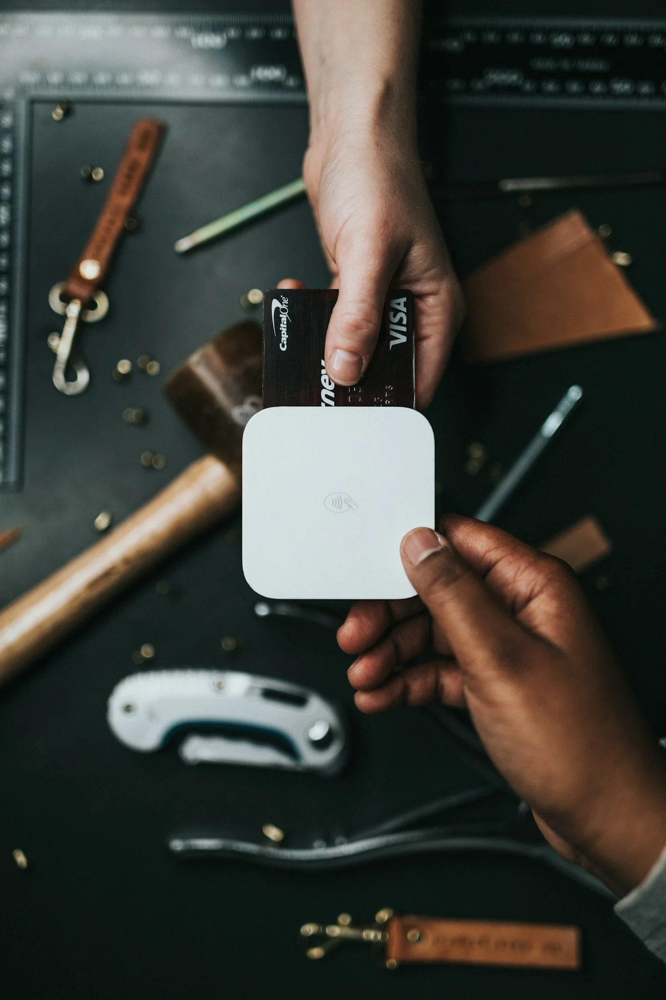

Wie KI die Kundenbetreuung verändert

1. Intelligente Chatbots (die tatsächlich helfen)
Frühere Chatbots waren frustrierend. Moderne KI-Chatbots verstehen Kontext und liefern präzise Antworten.
Beispiel: Kunde fragt "Wo ist meine Bestellung?" → Bot findet Bestellung automatisch, zeigt Status, schickt Tracking-Link. Alles in 5 Sekunden.
ROI: 60% weniger Support-Anfragen an Menschen. Support-Team kann sich auf komplexe Fälle konzentrieren.
2. Sentiment-Analyse (Unzufriedenheit früh erkennen)
KI analysiert Ton und Sprache. Wenn ein Kunde frustriert klingt, wird das Ticket automatisch eskaliert.
Beispiel: E-Mail enthält "enttäuscht", "bereits dreimal kontaktiert", "Anwalt einschalten" → Ticket geht sofort an Senior Support + Manager-Benachrichtigung.
ROI: 30% weniger Kündigungen durch frühzeitige Intervention.
3. Automatische Ticket-Kategorisierung
KI liest jede Support-Anfrage und kategorisiert: Technisch? Zahlung? Beschwerde? Dann Routing an richtiges Team.
ROI: 50% schnellere Reaktionszeiten. Kunde wartet nicht mehr in falscher Warteschlange.
4. Wissenssuche (interne Dokumente durchsuchen)
Support-Mitarbeiter müssen nicht mehr manuell in Handbüchern suchen. KI findet relevante Infos sofort.
Beispiel: Agent tippt "Rücksendung defekte Ware" → KI zeigt relevante Policy + Beispiel-E-Mail + FAQ-Link.
ROI: 40% schnellere Ticket-Bearbeitung.
5. Predictive Support (Probleme vorhersagen)
KI erkennt Muster. Wenn ein Kunde plötzlich weniger aktiv ist + Support kontaktiert: Abwanderungs-Risiko.
Aktion: Proaktiver Anruf vom Account Manager, bevor Kunde kündigt.
ROI: 20-30% Reduktion der Kundenabwanderung.
KI-gestützte Kundenbetreuung implementieren?
Wir entwickeln intelligente Support-Systeme, die Ihr Team entlasten.
Beratung anfragen →Fazit: Die Zukunft ist hybrid
KI ersetzt nicht den menschlichen Support. Sie ergänzt ihn. Standard-Anfragen → KI. Komplexe Probleme → Mensch. Ergebnis: Schneller, günstiger, besser.
Unternehmen, die jetzt in KI-Support investieren, haben einen klaren Wettbewerbsvorteil.